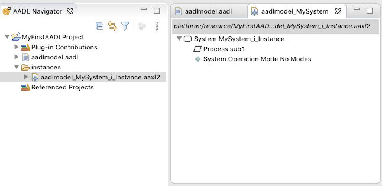

OSATE is a complete modeling environment providing support for describing AADL models. It is composed of many features to model and analyse systems. Also, a user can build their own tools based on OSATE and extend its initial capability.
This manual provides an overview of the basic features of OSATE and describes how to work with AADL models:
OSATE is built on the Eclipse framework. You may be familiar with Eclipse from using it for Java development. OSATE inherits many concepts from Eclipse including
AADL perspective.Problems view.If you are unfamiliar with Eclipse, the "Workbench User Guide" in the Eclipse help system is an excellent introduction. This can be accessed in OSATE by going to the Help menu in the main OSATE window and selecting Help Contents:
A new browser window will open with a table of contents on the left-hand side. The Workbench User Guide is the first document in the list:

All work in the OSATE is done through a Workbench. This is the main window, and it generally fills most or all of your screen. The look and contents of the workbench are highly customizable, but it is uncommon to deviate too much from its default layout. Generally it has
AADL Navigator that also displays globally available AADL property sets provided by plug-ins.Problems view along the bottom. This view is used to interact with markers.The rest of the center space of the workbench is used to hold editor windows. This layout can be seen in the workbench window below that is set to the OSATE AADL perspective:

There are several other features of the workbench visible in the above image:
Problems, Properties, and AADL Property Values views. .
. .
.As an Eclipse-based application, OSATE makes its commands available in multiple modalities. A single command is usually available
CTRL + click in MacOS.)If you accidently close a view or simply want to add an additional view to the workbench, you can open a view by using the Window > Show View submenu in the main OSATE menubar:

This menu is populated with views specific to the current perspective. Here we see the AADL Navigator and AADL Property Values views specific to the AADL perspective. If you do not see the view you need listed, choose the Other... option to bring up the Show View dialog:

This dialog lists all the views available. Views are grouped by category. Above we see the Error Log view in the General category being selected for use.
If you open/close too many views, rearrange your views, or otherwise put the workbench in a state that you find unusable, you can bring it back to good state by resetting the perspective. In the case of OSATE, you should reset the AADL perspective by bringing up the context menu on the AADL perspective icon on the right side of the workbench toolbar, and selecting reset:

This returns the arrangement of views and editors to a the default layout defined by the perspective.
OSATE (via its Eclipse underpinnings) has an exhaustive set of preferences that can be changed. These are accessed via the Preferences window. Access to preferences follows the host operating system standards:
Window > Preferences.OSATE > Preferences....This brings up a window with a hierarchical list of settings on the left-hand side.
One setting of immediate interest is found under General > Startup and Shutdown. By default the setting Refresh workspace on startup is not enabled. Enabling it ensures that when starting up, OSATE updates its records to reflect any changes to the files in the workspace that may have occurred outside OSATE.

You can manually initiate a refresh by selecting projects, folders, or files in the AADL Navigator and invoking File > Refresh in the main menu or Refresh in the navigator's context menu.
Let us create an AADL Project in OSATE. To create a new AADL project in the workspace, click on the New AADL Project button  in the OSATE toolbar. A new project wizard will open:
in the OSATE toolbar. A new project wizard will open:

Enter MyFirstAADLProject as the project name and click on the Finish button. The wizard creates a new project. It is visible in the AADL Navigator view. Note the small A on the project that indicates it is an AADL project:

Also visible in the view is a library icon labeled Plugin_Contributions. This view element collects all the AADL property sets available by default in OSATE:

The Predeclared_Property_Sets are those that are specified by the AADL standard document and are provided by the core OSATE environment. The others are specified in other documents and provided by plug-ins to OSATE. For example ARINC653 contains property sets specified in the ARINC653 annex to AADL and is provided by a plug-in.
Property sets in Plugin_Contribution may be used by any project in the workspace by providing the appropriate with clause in the package specification. In particular, they do not need to be copied into a project to be used.
Now that we have an AADL project in the workspace, we can populate it with an AADL Package:
MyFirstAADLProject.New AADL Package button  in the OSATE toolbar to bring up the AADL package wizard:
in the OSATE toolbar to bring up the AADL package wizard:

aadlmodel for the package name and click on Finish.OSATE creates the file aadlmodel.aadl in the project, populates it with a skeleton package declaration, and opens it in the AADL text editor:

Note that the wizard has radio buttons that allow you to specify whether the package should be opened in the text editor or the diagram editor. By default the text editor is selected.
Replace the contents of the editor with the simple model below:
package aadlmodel
public
process MyProcess
end MyProcess;
system MySystem
end MySystem;
system implementation MySystem.i
subcomponents
sub1: process MyProcess;
end MySystem.i;
end aadlmodel;You can use copy-and-paste to copy the above into the editor, but if you type it directly, you can experience some of the syntax-directed features of the aadl editor:
The editor automatically closes blocks. For example, when you type process MyProcess and enter a new line, the editor automatically inserts end MyProcess;.
You can access the automatic completion (a.k.a. autocomplete) feature by typing CTRL + Space in Windows or Command + Space in MacOS. This brings up a small context menu displaying options for how the current string in the editor can be completed. For example, below shows the result of activating autocomplete after typing syst:
 The menu shows that
The menu shows that syst can be completed with the keywords system or system implementation. In this case, we want system implementaton. You can select the completion with the mouse or by using the arrow keys and hitting return.
The list of completions also shows two more options. These are templates that insert a more complete system type or system implementation declaration into the text.
Autocompletion also works with declared names. For example, below shows the result of activating autocomplete after typing My:
 In this case, autocomplete suggests the system type name
In this case, autocomplete suggests the system type name MySystem. In particular, it does not suggest the process type name MyProcess because it would be erroneous in the context of declaraing a system implementation.
As you type you will notice that the editor underlines syntax errors in red. The right sidebar of the editor will also show a small redx indicating that an error marker exists for that line of text. For example, before the declaration of the system implementation is completed, the package has several errors:

The details of the error markers are visible in the Problems view. This is a standard Eclipse view. Despite the name Problems, not all markers necessarily mark problems or errors. Some OSATE analsyses generate information markers (visible with a blue i) as output.
The details of a marker can also be seen by hovering over the icon in the editor sidebar.
Also note that the AADL project is marked in the navigator view to indicate that its contents have error markers.
Once you have the package entered into the editor, save it. It should be error-free, without any markers:

OSATE provides many mechanisms for navigating through a model.
Outline ViewThe Outline view shows the model in the text editor as a tree structure. Selecting an element in the outline view causes the editor to move to that object in the text. You can disable this synchronization between the outline and the text with the double arrow button in the view's toolbar. You can also have the view sorted alphabetically instead of the order in the text by selecting the "a to z" icon.

You can search the text of a model using the standard Eclipse search facility under Search > Search... in the menu bar. This brings up a search window. It can also be used for search and replace. The scope of the search can also be specified. In most cases you just want to make sure that the File Search tab is selected, and enter your search term in the Containing text field. For example, the below will search for the string end in the project we created above:

When you click on the Search button, Eclipse performs the search. The results are displayed in the Search view:

Double-clicking on a result in the view opens the editor to the location of the match. All the matches are highlighted in the editor as well.
You can search for AADL classifiers and properties using the OSATE-provided AADL Search tab in the Eclipse search window.

You can search for the declarations of or references to classifiers or properties whose name contains the given substring. The above search looks for all classifier declarations and references where the the classifier name contains the substring find. AADL names are case insensitive so the search is always case insensitive. The scope of search (which resources are looked in) is also specified:
* It can be the entire workspace, in which all the AADL packages and property sets in the workspace, including plug-in contributions are searched.
* It can be the the selected resources in the AADL Navigator view. This button is only enabled when there is a selection in the view.
* It can be the limited to the currently active editor window. This button is only enabled when there is an active selected editor.
The search results are displayed grouped by the containing resource. Resources are listed alphabetically by their workspace path. Under each resource the results are listed in syntactic order. Here we see the results of the above search:

There are two classifiers FIND_ME and FIND_ME.impl that contain the string find, and seven references to those classifiers. Double-clicking on the results opens an editor to the site of the declaration/reference.
These view below shows the result of searching for property declarations in the workspace that contain the string time. Here we see that declarations are found in property sets contributed by plug-ins.

All references to names in the AADL editor are linked to their declaration. CTRL-clicking on the name will turn it into an active hyperlink and move the editor selection to the declaration of the name. For example, CTRL-clicking on MyProcess in the subcomponent declaration of MySystem above, moves the selection to the declaration of MyProcess earlier in the package.
A quick outline can be brought up in the AADL text editor by typing CTRL + o. The package outline will appear in a small window with a search box. You can filter the displayed outline elements by typing in the search box:

Selecting an item in the outline will move the editor to the selected element.
Much like a web browser, when you navigate to different locations within a file, follow references/links to other files, go to the location of a marker, or go to the result of a search, Eclipse keeps a history. Yellow navigation arrow buttons in the toolbar let you move back and forth through the history:

Most analyses are executed over the instance model of a system. The instance model represents the complete nested architecture of a system. Generally an instance model would be created from a system implementation classifier. But OSATE allows an instance model to be created from all implementation classifiers except for subprogram.
An instance model can be created in 3 ways:
Outline view. Select one or more component classifiers in the view. The command is active in the context menu as long as none of the classifiers is subprogram.AADL Navigator view. Select one or more component classifiers in the view. The classifiers can be from different projects. The command is active in the context menu as long as none of the classifiers is subprogram.OSATE > Instantiate menu. Select one or more component classifiers in either the Outline view or the AADL Navigator view. The classifiers can be from different projects. The command is active in the context menu as long as none of the classifiers is subprogram.To create an instance model of our example system
aadlmodel from above.Outline view. Here we select MySystem.i.Select Instantiate from the context menu.

OSATE displays a dialog box to show the results of the operation:

Here we see the status "OK" for the model built from component classifier aadlmodel::MySystem.i.
The result dialog is more interesting when many classifiers are selected for instantiation. Each instantiation is invoked as a separate Eclipse task, and (assuming the instantiation runs long enough) is visible in the Progress view. The result dialog is displayed when all the instantiation tasks have completed. It gives the result of each instantiation:
Progress view or progress dialog.Error Message column.Error Message column.In general, the instance model is created and placed in directory called instances in the same directory as the .aadl file that contains the root component classifier. This directory is created if it does not already exist. The file is only created if the status is "OK". The instance model built from system implementation my::package::system.impl is named my_package_system_impl_Instance.aaxl2. This is an XML-based model description that is not readily readable by people. It can be opened and viewed in a hierarchical manner in OSATE. Here we see the model we just generated:

The instantiation process may generate error and warning markers on the instantiated model. This occurs, for example, when the declarative model is underspecified or has inconsistencies.
Each element in the instance model links back to declarative model element that it is derived from. You can follow this link by selecting an element of the instance model in the instance model editor or in the Outline view and choosing Goto Instance Object Source in the context menu. For example, the process sub1 element of the instance model links to the sub1 subcomponent declaration in the declarative package:

Existing instance models can be rebuilt based on the current version of the declarative specifications using the Reinstantiate command. It is available in two places:
AADL Navigator view. Select one or more .aaxl files in the view. The files can be from different projects.OSATE > Reinstantiate menu. Select one or more .aaxl files in the AADL Navigator view. The classifiers can be from different projects.Like the Instantiate command, a results dialog box is displayed once all the models are reinstantiated. A file is deleted if an error or exception occurs during reinstantiation, or if reinstantiation is cancelled while it is running. If reinstantiation is cancelled while the task is still in the "waiting" state, the file is not deleted.
Eclipse can import/export projects from/to .zip files. This is a simple way to share your work with other users, but not the best approach for collaborative work where you would want to use a version control system.
Here we show how to import an AADL project containing .aadl model files, but these instructions are not specific to OSATE or working with AADL source files.
Example
In this section we import a project into the workspace from the archive file PropertyViewerExamples.zip. Please use the link to download the file to follow along with the instructions below.
Open the import wizard by selecting Import... from the context menu of the AADL Navigator view:

You should see a dialog like this:

Select General > Existing Projects into Workspace, and click on the Next > button.

An Import Projects wizard dialog will open. (An archive may contain more than one project, although in our example it contains just one.)
Select archive file radio button.Click on the associated Browse... button to bring up a file selection dialog to choose the archive file to import. In this case, select the PropertyViewerExamples.zip that you downloaded earlier.
The wizard dialog should look like the image below, except with your local pathname showing. The projects contained in the archive are listed in the Projects section. Here you can select which projects to import. Our example has only one project, and we leave it selected.
Click on the Finish button to begin the import process.

The wizard dialog will close when the import process finishes. The imported project (or projects) will be visible in your workspace. In the case of our example, you should see a project named PropertyViewerExamples that contains five .aadl files.

Here we show how to export an AADL project containing .aadl model files, but these instructions are not specific to OSATE or working with AADL source files.
Example
In this section we export the project that we imported into the workspace in the previous section. Below it is assumed that you have a project named
PropertyViewerExamplesin your workspace.
Open the export wizard by
PropertyViewerExamples in the AADL Navigator.Export... from the context menu.
You should see a dialog like this:

Select General > Archive File, and click on the Next > button.

An Archive file wizard dialog will open.
Save in zip format is selected.Browse... button to use the file selection dialog to specify the pathname.Finish button to begin the export process.
The wizard dialog will close when the export process finishes. The new archive file will be created where you specified. You can now share this archive with other users.
While archive files provide a quick-and-dirty mechanism for sharing projects, this becomes problematic when you want to collaborate. It is better to store projects in a version control system (VCS) so that changes to the models can be coordianted. Eclipse (and thus OSATE) supports all the popular VCS, including svn and git. In this section, we show how to import a project from a git repository.
We are going to reimport the PropertyViewerExamples project, but this time using git. So if you already have the project in your workspace from the previous section, you will need to delete it:
Select the project in the AADL Navigator.
Select Delete in the context menu.
 (You can also use the
(You can also use the Delete key as a shortcut.)
OSATE presents a confirmation dialog box. Make sure to check Delete project contents on disk:

Click on OK.
OSATE removes the project from the workspace and deletes the contents of the workspace from the file system.
Work with git repositories is performed in the git perspective. Open and switch to the perspective by
Clicking on the Open Perspective button  on the top right of the toolbar.
on the top right of the toolbar.
Choose Git in the Open Perspective dialog:

Click on Open.
The OSATE workbench reconfigures to show an (empty) list of repositories on the left-hand side:

You need to clone a repository before you can import a project from it. In this case, we are going to clone the AADL examples repository.
Click on the Clone repository  button in the toolbar of the
button in the toolbar of the Git Repositories view.
The clone wizard opens. Enter the URI of the repository in the URI field. In this case we use https://github.com/osate/examples. The wizard automatically fills in the Host and Repository path fields.
Because you only need read access to the examples, you do not need to enter a user name or password. In general, however, your repositories will probably require authentication and you would enter the credentials here.
Click on Next >

The wizard now asks which branches to clone. Here there is only one: master.
Leave it selected and click on Next >.

The wizard now asks where to store the cloned repository. The default location is in the git directory in the the root of your user directory. There is generally no reason to change this.
Click on Finish.

OSATE now clones the repository. This may take a few minutes. When it is finished, the repository appears in the Git Repositories view.

Now that the repository is cloned, we can import a project from it into the workspace:
Select the project to import in the Git Repositories view. In this case we select PropertyViewerExamples under the Working Tree.
Open the context menu and choose Import Projects....

The import projects wizard opens. Just click on Finish.

OSATE imports the shared project into your workspace.
Return to the AADL perspective by clicking on the AADL Perspective button  on the top-right of the workbench toolbar.
on the top-right of the workbench toolbar.

The imported project is visible in the AADL Navigator view. It is annotated with a small orange cylinder that indicates the contents are under version control. The project label itself is also annotated indicating the the contents come from the example repository and are from the master branch.
You can now proceed to use the project in your workspace.
Once you have a system model, you can use OSATE to analyze the model to confirm that the design meets your intended criteria. In this section we run a latency analysis over the end-to-end flows of a system. This section is not meant to be a tutorial on using any specific analysis, but instead is a demonstration of
Example
This section uses the project
latency-case-studyfound in theexamplesgit repository. Follow the instructions above to import the project into your workspace.
The latency analysis operates on the system instance model, so we first need to create an instance model:
integration.Outline view to create an instance model from the system implementation integration.software_integrated..aaxl2 instance model file in the project.Analyses > Timing > Check Flow Latency from the main menu to execute the latency analysis:

The analysis executes and you may see a progress bar at the bottom of the OSATE workbench.
The analysis generates results in two ways:
reports/latency directory of the project.The analysis reports 4 error markers and 2 warning markers:

Here we see that the end-to-end flows etef0 and etef1 fail to meet the expected latency contraints.
Goto Instance Object Source command to jump to the AADL source where the flows are declared.The files in the reports directory contain more specific results (in three different formats). Below shows a portion of the .csv file opened in a spreadsheet application:

Here we see the full results for the end-to-end flow etef0, includingng individual components' contributions to the latency.
The AADL Property Values view is used to display and edit property values in a structured manner, which is often easier than navigating and manipulating the AADL text files directly.
Example
The packages used as examples in this section can be imported into your workspace from the
PropertyViewerExamplesproject in theexamplesgit repository. Please see the help section on importing projects into the Eclipse workspace.
Below is an example of the view in action. It is displaying the properties of the process subcomponent Sampler_B of system implementation Software.Basic in project Page_220.

From the main menu, select Window > Show View. If OSATE is currently in the AADL perspective, then you can select AADL Property Values.

If you are not in the AADL Perspective, select Other... to bring up the Show View dialog box:

Choose AADL > AADL Property Values and click on the Open button.

The view displays all of the properties of the AADL model element that is currently selected in the worksapce. Selections can be made in the editor or in the outline view. For example, to show the properties of the process subcomponent Sampler_B of system implementation Software.Basic in project Page_220 as shown above, you can
Page_220 in the editor and move the text cursor to be within the syntax for subcomponent Sampler_B.or
Sampler_B in the Outline view.The displayed properties are organized by property set.
Example
In the previous screenshot, the property
Periodis displayed under its property setTiming_Properties.
The view also provides additional structure for certain types of property values:
Example
The screenshot above shows the expanded list value for the property
Source_Text.
The Status column in the view indicates where the property value comes from based on the semantics of AADL. The status is one of
The following sections describe property status in more detail.
A local property value is defined directly on the AADL model element in either its properties subclause or in curly braces.
Example
In the previous screenshot, the properties
Source_TextandPeriodare both local because they are defined in curly braces.Example
In the screenshot below, the properties
Car_Length,Car_Name, andPositionare all local because they are defined in the properties subclause of the devicecar.
Example
The above screenshot also shows the expanded structure of the record values for properties
Car_NameandPosition.
Contained property values are those defined in a properties subclause and are applied to a nested model element using the applies to clause. In general, the property can be applied to an element nested several layers down in the containment hierarchy, e.g., to a sub-sub-subcomponent. The AADL Property Values view only displays contained property values for the immediate children of a classifier. To view the property values resulting from all contained property associations in a model, a system instance model must be created. The instantiation evaluates the applicable contained property associations and copies the resulting values as local associations into the instance model.
The view distinguishes between a local contained and shared local contained property association:
Example
In the following screenshot, the view is showing the properties of the data port (feature)
GPS_Data. The propertyInput_Rateis local contained because its value is defined in thepropertiessubclause of the containing process typeBlended_Navigation. Note the syntaxapplies to GPS_Dataat the end of the property value.
Example
Edit
Blended_Navigationfrom the above example so that first property associationapplies to GPS_Data, INS_Data(see below). Now the propertyInput_Rateon featureINS_Data(andGPS_Data) is shared local contained.
The inherited status indicates that the property association is declared
or
Example
In the following screenshot, the thread
Prime_Reporter_Oneis selected. The propertyDispatch_Protocolis inherited because it is defined inPrime_Reporterwhich is extended byPrime_Reporter_One.
The default status indicates that the property value for the selected element is not defined on any model element, but instead comes from the property's default value declaration.
Properties with the default status are normally not shown in the view. The toolbar button  can be used to toggle the display of default properties.
can be used to toggle the display of default properties.
Example
In the following screenshot, the properties
Active_Thread_Handling_Protocol,Active_Thread_Queue_Handling_Protocol,Deactivation_Policy, andSynchronized_Componentare all default because their values come from the property declaration. This can be seen in the upper editor showing the property setThread_Properties. There the propertyActive_Thread_Handling_Protocol, for example, has the default value ofabort.
The undefined status indicates that the property has no value for the selected model element. These properties are applicable to the selected element, so they could potentially have values for the selected property holder.
Properties without a value are normally not shown in the view. The toolbar button  can be used to toggle the display of undefined properties.
can be used to toggle the display of undefined properties.
Example
In the following screenshot, the properties
Criticality,Dispatch_Able,Dispatch_Trigger,POSIX_Scheduling_Policy, andPriorityare all undefined because they have no value.
The toolbar contains three buttons that influence which properties are displayed in the view:
 : Show only properties in property sets which are included in the package's with statements.: Show undefined properties.: Show default properties.
: Show only properties in property sets which are included in the package's with statements.: Show undefined properties.: Show default properties.The view's menu also contains an option for filtering by property set. Selecting Property Set Filters... in the view's menu opens a dialog which allows you to choose which property sets should be shown in the view.
Properties with the status of local, local contained, or shared local contained can be edited directly in the view. To begin editing, simply click on the property value in the view's table. The table cell becomes editable and you can type in the new value. If there are syntax errors in your new value, then the error will be underlined in red and you can hover over the cell to see an error message. Content assist is also available while editing by pressing Ctrl + Space. This can be especially useful when entering enumeration literals, unit literals, classifier values, or reference values.
When you are finished editing, press enter or click outside of the table cell and the new value will be updated in the AADL model. If you edit a property that is shared local contained then you will be editing the value for all model elements that are listed in the applies to clause of the property association.
There are several actions available in the view's context menu when you right-click on a row in the view's table.

This action opens the declaration of the selected property set, property, or record field in the AADL text editor.
This action opens the property association that provides the displayed property value in the AADL text editor. This action is enabled for properties that are local, local contained, or inherited. If the action is executed on an inherited property, then the view will be updated as well such that the selected property is shown as a local property.
This action is especially useful in an instance model to find out which contained property association in the declarative model is used to provide an instance property value.
This action is enabled for inherited, default, and undefined properties. Executing this action will create a new local value for the selected property and begins the editing process. The new property association is inserted in curly braces with the current model element in the AADL text editor.
This action is enabled for inherited, default, and undefined properties. Executing this action creates a new local contained value for the selected property and begins the editing process.
This action is enabled for inherited, local contained, shared local contained, and default properties. Executing this action creates a new local property association with the same value as was displayed in the view when the action was executed. In other words, the existing value is copied into the new local value.
This action is enabled for inherited, local, shared local contained, and default properties. Executing this action creates a new local contained property with the same value as was displayed in the view when the action was executed. In other words, the existing value is copied into the new local contained value.
This action is enabled for local, local contained, and shared local contained properties. It can be used to do one of the following:
Note that executing this action on a shared local contained property impacts all model elements that share the selected property value.
The Classifier Information view makes it easy to see the complete ancestry of an AADL classifier (component type, component implementation, or feature group type), and to see the full list of members of the classifier. To open a classifier in the view, select a classifier in the AADL Navigator or Outline view and choose Open in Classifier Information View from the context menu:


(There is also an Open in Classifier Information View command in the context menu of the AADL text editor. It does its best to find the most appropriate classifier to display based on the current text selection.)
The Classifier Information view becomes populated with information about the classifier:

The view is split in half: 1. The left half shows the extension hierarchy 2. The right half shows the members of the classifier grouped by kind.
In the above, the view shows information about the classifier T2.i2. From the hierarchy tree we see that
* It implements T2 which extends T1.
* It extends T2.i1.
Double-clicking on any of the ancestors opens the AADL source text for the ancestor in an editor.
The members tree shows all the members of T2.i2. If a member is not declared locally it is annotated with the ancestor that declares it, e.g., the feature f2 [from T2]. If a member is a refinement it is annotated with the prefix refined and lists the refined member as a child in the tree. These annotations interact, for example, the feature refined f1 [from T2] indicates that a refinement of feature f1 is inherited from type T2. The child f1 [from T1] indicates that the feature was originally declared in type T1.
Feature group types may have the additional annotation inverse of indicating that the feature is the inverse of given feature. For example, in the screenshot below, the features groups IG1 and IG2 are declared to be inverses of the feature groups FG1 and FG2, respectively. Neither declares any explicit features. The Classifier Info view shows that feature group type IG2 has two features:
1. A feature that is the inverse of the feature f1 declared in FG1.
2. A feature that is the inverse of the feature f2 declared in FG2.

Double-clicking on any of the members opens the AADL source text for the member in an editor.
The view's toolbar contains a single button that controls whether the view's selection is synchronized with the editor:
*  When the action is selected, simply selecting an item in the view is enough to open an editor to the associated AADL source text.
*
When the action is selected, simply selecting an item in the view is enough to open an editor to the associated AADL source text.
*  When the action is deselected, an item in the view must be double-clicked on to open the AADL source in an editor.
When the action is deselected, an item in the view must be double-clicked on to open the AADL source in an editor.